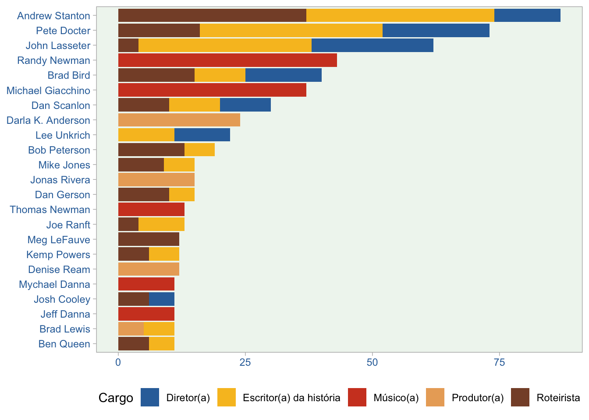

Post publicado no blog da Escola de Dados
O texto abaixo foi escrito por Fernando Barbalho, Beatriz Milz e Emmanuelle Nunes. Ele é baseado no artigo escrito por Fernando Barbalho no blog “Towards Data Science”. Você verá textos e os códigos na linguagem R que produzem os gráficos exibidos. O material também está disponível como um notebook nesse repositório do GitHub ou no RStudio Cloud.
Introdução
A ideia de traduzir o texto ‘Pixar: a data story’ para português foi impulsionada pela disponibilização da base de dados sobre filmes da Pixar em nossa língua no pacote Dados. Esse pacote foi criado pela comunidade de R na América Latina, contando com a colaboração de pessoas que fazem parte da Latin-R, R-Ladies e Curso-R.
Alguns dos objetivos do pacote Dados são:
Disponibilizar bases de dados em português utilizadas principalmente no ensino de R (como cursos, textos em blogs, livros). Por exemplo, estão disponíveis lá todas as bases usadas no clássico livro R for Data Science, entre outras;
Incentivar pessoas a ser tornarem desenvolvedoras em R (várias pessoas que participaram do desenvolvimento do pacote e realizaram traduções não tinham experiência com colaboração via GitHub e desenvolvimento de pacotes em R, por exemplo);
Colaborar com a diminuição da lacuna linguística em materiais usados no ensino de R.
Emmanuelle Nunes foi convidada para ser co-autora deste post por ser a pessoa que realizou a tradução de todas as bases de dados do pacote pixarfilms. Já Beatriz Milz foi convidada por ter uma atuação importante na organização da equipe para realizar as traduções das bases de dados, além de realizar traduções e revisões. Ambas colaboraram na adaptação dos códigos já existentes para usar as bases de dados em português e na adaptação de alguns gráficos.
Boa leitura!
library(magrittr, include.only = "%>%")
# Instalar o pacote dados (se necessário)
# install.packages("remotes")
# remotes::install_github("cienciadedatos/dados")
pixar_completo <-
dados::pixar_filmes %>%
dplyr::inner_join(dados::pixar_generos) %>%
dplyr::inner_join(dados::pixar_equipe) %>%
dplyr::inner_join(dados::pixar_bilheteria) %>%
dplyr::inner_join(dados::pixar_avalicao_publico)
pixar_completo_nome_curto <- pixar_completo %>%
dplyr::mutate(
filme = dplyr::case_when(
filme == "Toy Story – Um Mundo de Aventuras" ~ "Toy Story",
filme == "Up – Altas Aventuras" ~ "Up",
filme == "Viva – A Vida é Uma Festa" ~ "Viva",
filme == "Dois Irmãos: Uma Jornada Fantástica" ~ "Dois Irmãos",
TRUE ~ filme
)
)Pixar e as lembranças afetivas
Então, você finalmente completou 18 anos. Está se preparando para ir para a faculdade. Você pode até deixar a casa de seus pais e se mudar para outra cidade. Talvez leve alguns objetos que o lembrem de sua infância. Ou, quem sabe, talvez você seja o pai ou a mãe deste novo ser independente. Seu coração dói pelos caminhos que seu filho ou sua filha tomarão. E talvez você esteja se percebendo no Toy Story 3.
Quer você seja um dos pais de Andy ou do próprio Andy, é provável que nos últimos anos você tenha assistido filmes da Pixar. Você pode ter ficado aflito com Procurando Nemo, aprendido algumas lições de Carros ou se assustado com o futuro apocalíptico de Wall-E.
Aqui neste texto, a missão é fazer com que você não se sinta sozinho e perceba que as aventuras dos filmes são amadas pelo público e críticos. Vamos ver isso por meio de dados e gráficos usando as cores da Toy Story, a franquia mais icônica da Pixar.
Pegue seus balões de hélio e vamos juntos nesta jornada.
paleta_de_cores <-
c(
"#3170A9", "#F0F6F0", "#F7C026",
"#D04427", "#EAAB66", "#864F34"
)
paleta_de_cores_2 <- c("#FFB400", "#FFC740", "#C20008", "#FF020D", "#13AFEF")Orçamento, bilheteria e crítica
Eu não sou o Andy nesta história. Eu sou o pai dele. Meu filho e eu costumávamos ver todos os filmes da Pixar. O primeiro de que me lembro foi Carros. Nós o vimos dezenas de vezes. Talvez por diferentes razões. Do meu lado, eu costumava gostar de ver o Art Deco e o espírito dos anos 50 e 60, que era facilmente reconhecível no filme.
Apesar de nossa primeira preferência ser Carros, isso não é uma unanimidade. Neste primeiro gráfico abaixo, mostramos o ranking dos filmes da Pixar em 3 fontes de dados diferentes (Rotten Tomatoes, Metacric e Critics Choice).
dados::pixar_avalicao_publico %>%
dplyr::select(-nota_cinema_score) %>%
tidyr::pivot_longer(-filme, names_to = "critica", values_to = "nota") %>%
dplyr::mutate(critica = factor(
critica,
labels = c("Rotten tomatoes", "Metacritic", "Critics choice"),
levels = c(
"nota_rotten_tomatoes",
"nota_metacritic",
"nota_critics_choice"
)
)) %>%
dplyr::mutate(filme = reorder(filme, nota, FUN = sum)) %>%
ggplot2::ggplot(ggplot2::aes(y = filme, x = nota, fill = critica)) +
ggplot2::geom_col(show.legend = FALSE) +
ggplot2::scale_fill_manual(values = c(
paleta_de_cores_2[1],
paleta_de_cores[1],
paleta_de_cores_2[5]
)) +
ggplot2::facet_wrap(critica ~ .) +
ggplot2::labs(x = "Nota", y = "Filme") +
ggplot2::theme_light() +
ggplot2::theme(
panel.background = ggplot2::element_rect(fill = paleta_de_cores[2]),
panel.grid = ggplot2::element_blank(),
axis.text.y = ggplot2::element_text(color = paleta_de_cores[1]),
axis.text.x = ggplot2::element_text(color = paleta_de_cores[1]),
strip.background = ggplot2::element_rect(fill = "white"),
strip.text = ggplot2::element_text(color = paleta_de_cores[1])
)
Como mostrado acima, Carros, o meu favorito, está no lado inferior da lista. Mas tudo bem. Talvez os críticos não tenham entendido o filme.
Toy Story (1995) foi o primeiro filme da Pixar. A imagem acima o mostra como o filme melhor avaliado da franquia no Rotten Tomatoes e listado entre as três primeiras posições no Metacritic. Um outro filme da “primeira geração” muito bem posicionado é Vida de Inseto (1998), a segunda animação da Pixar.
No geral, parece que os primeiros filmes são melhores avaliados, em comparação com os mais recentes. Abaixo, vamos explorar mais este aspecto temporal, mostrando uma cronologia dos filmes com informações sobre orçamento e bilheteria.
pixar_completo %>%
dplyr::distinct(filme, data_lancamento, orcamento, bilheteria_mundial) %>%
dplyr::rename(
`Bilheteria Mundial` = bilheteria_mundial,
`Orçamento` = orcamento
) %>%
tidyr::pivot_longer(-c(1, 2), names_to = "dinheiro", values_to = "valor") %>%
dplyr::mutate(valor = valor / 10^6) %>%
ggplot2::ggplot(ggplot2::aes(x = data_lancamento, y = valor, fill = dinheiro)) +
ggplot2::geom_col(color = paleta_de_cores[7]) +
ggplot2::scale_fill_manual(values = c(paleta_de_cores_2[1], paleta_de_cores_2[5])) +
ggplot2::scale_x_date(
date_breaks = "2 years",
date_labels = "%Y",
guide = ggplot2::guide_axis(n.dodge = 1)
) +
ggplot2::theme_light() +
ggplot2::theme(
panel.background = ggplot2::element_rect(fill = paleta_de_cores[2]),
panel.grid = ggplot2::element_blank(),
legend.position = "bottom",
axis.text.y = ggplot2::element_text(color = paleta_de_cores[1]),
axis.text.x = ggplot2::element_text(color = paleta_de_cores[1]),
) +
ggplot2::labs(
x = "Ano de lançamento",
y = "Bilheteria mundial \n em milhões de dólares (US$)",
fill = ""
) +
ggplot2::annotate(
"text",
x = as.Date("1995-11-22"),
y = 450,
label = "Toy Story",
color = paleta_de_cores[1],
hjust = 0.3,
fontface = "bold"
) +
ggplot2::annotate(
"text",
x = as.Date("2018-06-15"),
y = 1480,
label = "Incredibles 2",
color = paleta_de_cores[1],
fontface = "bold"
) +
ggplot2::annotate(
"text",
x = as.Date("2010-06-18"),
y = 1310,
label = "Toy Story 3",
color = paleta_de_cores[1],
fontface = "bold"
) +
ggplot2::annotate(
"text",
x = as.Date("2019-06-21"),
y = 1310,
label = "Toy Story 4",
color = paleta_de_cores[1],
hjust = 0.23,
fontface = "bold"
) +
ggplot2::annotate(
"text",
x = as.Date("2020-12-25"),
y = 350,
label = "Soul",
color = paleta_de_cores[1],
hjust = 0.2,
fontface = "bold"
)
Como você pode ver acima, Toy Story nos conta uma história diferente dos outros filmes quando comparamos variáveis relacionadas ao dinheiro. Ele tem um orçamento muito pequeno e também uma bilheteria que está longe do grande desempenho alcançado pelos blockbusters mais importantes da Pixar. Talvez o público tivesse uma visão diferente do filme, quando comparado aos pontos de vista dos críticos. Não sou especialista, mas talvez a divergência entre percepção da crítica e resultado de bilheteria também possa ser explicado por fenômenos econômicos, tais como a inflação de todo este período. Convido vocês a fazer esta pesquisa.
Ao olhar para a linha do tempo, é notável como Os Incríveis 2, Toy Story 3, e Toy Story 4 tiveram bons desempenhos. Esses filmes foram as principais fontes de lucro para a Pixar. Infelizmente, o mesmo não pode ser dito sobre Soul. Ainda não o vi, mas a maioria dos meus amigos me disse que é um grande filme.
A pandemia aqui talvez tenha, de alguma forma, uma enorme influência sobre estes resultados. Considerando que os filmes Dois Irmãos: Uma Jornada Fantástica e Soul foram lançados no ano de 2020 e a pandemia impossibilitou a ida aos cinemas, não é adequado comparar o valor arrecadado em bilheteria destes filmes com os outros filmes da Pixar.
Como estamos falando de orçamento e bilheteria, outra pergunta que surge é: existe alguma relação que possamos descobrir quando vemos um gráfico de dispersão destas variáveis?
pixar_completo_nome_curto %>%
dplyr::distinct(filme, orcamento, bilheteria_mundial) %>%
dplyr::mutate(
orcamento = orcamento / 10^6,
bilheteria_muncial = bilheteria_mundial / 10^6
) %>%
ggplot2::ggplot(ggplot2::aes(
x = orcamento,
y = bilheteria_muncial
)) +
ggplot2::geom_point(
size = 4,
fill = paleta_de_cores_2[1],
color = paleta_de_cores_2[5],
pch = 21,
alpha = 0.7
) +
ggrepel::geom_text_repel(
ggplot2::aes(label = stringr::str_wrap(filme, 15)),
size = 3.5,
color = paleta_de_cores[1],
fontface = "bold",
set.seed = 1972,
segment.linetype = 5,
segment.alpha = 0.5,
box.padding = grid::unit(1, "lines")
) +
ggplot2::theme_light() +
ggplot2::theme(
panel.background = ggplot2::element_rect(fill = paleta_de_cores[2]),
panel.grid = ggplot2::element_blank(),
axis.text.y = ggplot2::element_text(color = paleta_de_cores[1]),
axis.text.x = ggplot2::element_text(color = paleta_de_cores[1])
) +
ggplot2::labs(
x = "Orçamento em milhões de dólares (US$)",
y = "Bilheteria mundial \n em milhões de dólares (US$)"
)
A regra dos quatro quadrantes está presente em nosso gráfico. Vemos alguns filmes com pequenos valores em ambas as variáveis. Estes são os casos de Toy Story, Carros, e Toy Story 2. Também podemos ver um orçamento pequeno e uma grande bilheteria em filmes como Os Incríveis e Procurando Dory.
Há também representantes de um tipo de falha em termos de desempenho da Pixar: Soul, Carros 3, e Os bons dinossauros. Estes são os filmes com um grande orçamento e bilheteria pequena. E finalmente, podemos notar os grandes blockbusters representados pelos filmes Os Incríveis 2, Toy Story 4, Toy Story 3, e Procurando Nemo. Nestes casos, isto é o que esperaríamos do senso comum: grandes orçamentos relacionados a grandes receitas.
Outra relação que é uma boa ideia para testar é entre orçamento e média de notas do crítico.
pixar_completo_nome_curto %>%
dplyr::distinct(
filme,
orcamento,
nota_rotten_tomatoes,
nota_metacritic,
nota_critics_choice
) %>%
tidyr::pivot_longer(-c(filme, orcamento),
names_to = "critica",
values_to = "nota"
) %>%
dplyr::group_by(filme) %>%
dplyr::summarise(
orcamento = max(orcamento),
nota = mean(nota, na.rm = TRUE)
) %>%
dplyr::ungroup() %>%
dplyr::mutate(
orcamento = orcamento / 10^6
) %>%
ggplot2::ggplot(ggplot2::aes(
x = orcamento,
y = nota
)) +
ggplot2::geom_point(
size = 4,
fill = paleta_de_cores_2[1],
color = paleta_de_cores_2[5],
pch = 21,
alpha = 0.7
) +
ggrepel::geom_text_repel(
ggplot2::aes(label = stringr::str_wrap(filme, 15)),
size = 3.5,
color = paleta_de_cores[1],
fontface = "bold",
set.seed = 1972,
segment.linetype = 5,
segment.alpha = 0.5,
box.padding = grid::unit(1, "lines")
) +
ggplot2::theme_light() +
ggplot2::theme(
panel.background = ggplot2::element_rect(fill = paleta_de_cores[2]),
axis.text.y = ggplot2::element_text(color = paleta_de_cores[1]),
axis.text.x = ggplot2::element_text(color = paleta_de_cores[1]),
panel.grid = ggplot2::element_blank()
) +
ggplot2::labs(
x = "Orçamento em milhões de dólares (US$)",
y = "Nota"
)
No gráfico acima, notamos a inexistência do quadrante de orçamentos baixos com baixas classificações (trecho inferior esquerdo). Então, o primeiro quadrante que veremos é aquele associado a filmes de baixo orçamento com altas classificações da crítica (trecho superior esquerdo do gráfico). Neste caso, Toy Story é, de longe, o melhor representante.
Esta descoberta muda completamente a imagem deste filme quando o comparamos com o gráfico analisado anteriormente. Vemos, por outro lado, alguns filmes com um grande orçamento e com notas fracas (trecho inferior direito). Destaque para Carros e Carros 3.
Finalmente, é fácil perceber a grande concentração no que se espera do senso comum: grandes orçamentos com altas médias de notas (trecho superior direito). Aqui os destaques são Toy Story 3 e Toy Story 4. Note que Os Incríveis 2, um campeão de bilheteria, como vimos no gráfico anterior, está aqui. Acontece, entretanto, que sua média de notas que não corresponde ao sucesso de público que o filme alcançou.
Isto levanta outra questão: o sucesso do público se relaciona com o sucesso com os críticos? Recarregue seus balões com hélio e vamos continuar a viagem parando no próximo gráfico.
pixar_completo_nome_curto %>%
dplyr::distinct(
filme,
bilheteria_mundial,
nota_rotten_tomatoes,
nota_metacritic,
nota_critics_choice
) %>%
tidyr::pivot_longer(-c(filme, bilheteria_mundial),
names_to = "critica",
values_to = "nota"
) %>%
dplyr::group_by(filme) %>%
dplyr::summarise(
bilheteria_mundial = max(bilheteria_mundial),
nota = mean(nota, na.rm = TRUE)
) %>%
dplyr::ungroup() %>%
dplyr::mutate(bilheteria_mundial = bilheteria_mundial / 10^6) %>%
ggplot2::ggplot(ggplot2::aes(y = bilheteria_mundial, x = nota)) +
ggplot2::geom_point(
size = 4,
fill = paleta_de_cores_2[1],
color = paleta_de_cores_2[5],
pch = 21,
alpha = 0.7
) +
ggrepel::geom_text_repel(
ggplot2::aes(label = stringr::str_wrap(filme, 15)),
fontface = "bold",
size = 3.5,
color = paleta_de_cores[1],
fontface = "bold",
set.seed = 1972,
segment.linetype = 5,
segment.alpha = 0.5,
box.padding = grid::unit(1, "lines")
) +
ggplot2::theme_light() +
ggplot2::theme(
panel.background = ggplot2::element_rect(fill = paleta_de_cores[2]),
axis.text.y = ggplot2::element_text(color = paleta_de_cores[1]),
axis.text.x = ggplot2::element_text(color = paleta_de_cores[1]),
panel.grid = ggplot2::element_blank()
) +
ggplot2::labs(
y = "Bilheteria mundial \n em milhões de dólares (US$)",
x = "Nota"
)
Em nossa última análise, parece estar claro que as avaliações críticas nem sempre coincidem com as avaliações do público, aqui representado pelas bilheterias alcançadas pelos filmes. Vemos que há casos de sucesso de crítica como Soul e Toy Story 2, mas com baixa receita. Toy Story está neste quadrante, mas como indicamos anteriormente, é difícil avaliá-lo como um relativo fracasso do público com base na receita do filme, já que se trata de valores de mais de duas décadas.
Por outro lado, há coincidência na maioria dos outros filmes, especialmente no quadrante dos filmes com melhor classificação da crítica e desempenho de bilheteria. Para estes casos, Toy Story 3, Toy Story 4 e Procurando Nemo parecem ser os melhores exemplos.
Apenas continue a nadar
Chegamos agora ao final do texto. Vimos que as histórias contadas pela Pixar são parte de um conjunto de memórias compartilhadas por crianças, adolescentes, jovens e seus pais em várias partes do planeta.
Para nós, pais que estamos percebendo as fases de mudança na vida de nossos filhos, que agora enfrentarão o mundo com outras possibilidades e experiências, vale a pena lembrar do cartaz de Procurando Nemo.

O mundo estará cheio de tubarões, medusas, e também Nemos, Dorys, baleias e tartarugas. No fim do dia, o que parece ser mais importante é a famosa frase: continue a nadar.
Créditos
Como não poderia ser de outra forma, devemos deixar os créditos dos filmes. Aqui a opção é utilizar os recursos de visualização de dados. Mostrarei abaixo os 23 profissionais que mais apareceram nessas pequenas letras no final dos filmes.
A Stanton, Docter, Lasseter e sua gangue, nossos muitos agradecimentos. Que mais animações venham para ficar em nossa memória afetiva. Continuem a nadar.
equipe_20 <-
pixar_completo %>%
dplyr::mutate(
nome = dplyr::case_when(
nome == "Stanton" ~ "Andrew Stanton",
nome == "Docter" ~ "Pete Docter",
nome == "Lasseter" ~ "John Lasseter",
nome == "Unkrich" ~ "Lee Unkrich",
nome == "Scanlon" ~ "Dan Scanlon",
TRUE ~ nome
)
) %>%
dplyr::group_by(nome) %>%
dplyr::summarise(quant = dplyr::n()) %>%
dplyr::ungroup() %>%
dplyr::slice_max(order_by = quant, n = 20) %>%
dplyr::select(nome)
pixar_completo %>%
dplyr::mutate(
nome = dplyr::case_when(
nome == "Stanton" ~ "Andrew Stanton",
nome == "Docter" ~ "Pete Docter",
nome == "Lasseter" ~ "John Lasseter",
nome == "Unkrich" ~ "Lee Unkrich",
nome == "Scanlon" ~ "Dan Scanlon",
TRUE ~ nome
)
) %>%
dplyr::inner_join(equipe_20) %>%
dplyr::group_by(nome, cargo) %>%
dplyr::summarise(
quant = dplyr::n()
) %>%
dplyr::ungroup() %>%
dplyr::mutate(nome = forcats::fct_reorder(nome, quant, sum)) %>%
ggplot2::ggplot(ggplot2::aes(y = nome, x = quant, fill = cargo)) +
ggplot2::geom_col() +
ggplot2::scale_fill_manual(
values =
paleta_de_cores[-2]
) +
ggplot2::theme_light() +
ggplot2::theme(
panel.background = ggplot2::element_rect(fill = paleta_de_cores[2]),
panel.grid = ggplot2::element_blank(),
axis.text.y = ggplot2::element_text(color = paleta_de_cores[1]),
axis.text.x = ggplot2::element_text(color = paleta_de_cores[1]),
axis.title = ggplot2::element_blank(),
legend.position = "bottom"
) +
ggplot2::labs(fill = "Cargo")
Gostaria também de creditar Eric Leung, autor do pacote pixarfilms. Uma ideia certamente simples e ótima para explorações de dados como esta.